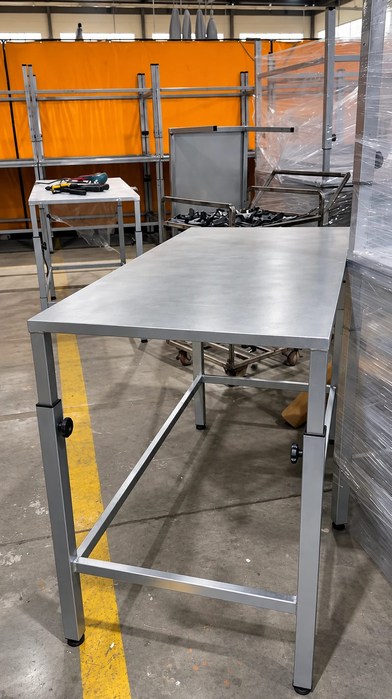
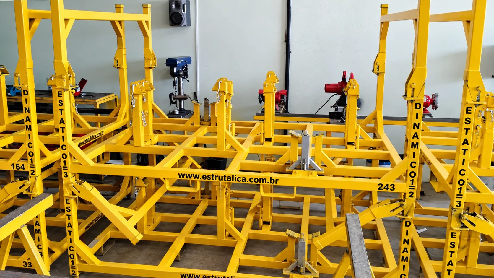

Rack industrial
Desenvolvido para armazenamento e movimentação de componentes.
Racks automotivos, carrinhos para soluções logísticas, bancadas e estruturas metálicas sob medida para movimentação, armazenagem e abastecimento industrial.
Mais de 13 anos no mercado, fabricação própria e projetos desenvolvidos de acordo com a necessidade de cada empresa.
Conte o que sua empresa precisa e inicie o atendimento pelo WhatsApp.

Quem somos
Há 13 anos, a Estrutálica acompanha de perto o desafio da indústria. Desenvolvemos soluções que precisam funcionar não apenas no projeto, mas principalmente dentro da operação real do cliente.
Estamos em Guarulhos, a 200 m da Rodovia Presidente Dutra e ao lado do Aeroporto de Guarulhos, com acesso rápido à Ayrton Senna e à Fernão Dias. Isso garante uma logística ágil para todo o Brasil.
Nossa equipe de engenheiros é especializada em estruturas metálicas e desenvolve o projeto completo a partir da sua necessidade: racks automotivos, carrinhos para soluções logísticas, bancadas e projetos especiais.
Já tem um modelo, uma amostra ou um protótipo? Também desenvolvemos o projeto a partir do material enviado pelo cliente, com a melhor solução possível.
Estruturas fabricadas pela Estrutálica para a movimentação, o armazenamento e o abastecimento de componentes industriais.
Desenvolvido para armazenamento e movimentação de componentes.

Projetados para movimentações internas, transporte de materiais e abastecimento da produção.

Desenvolvidas para montagem, produção e manutenção, conforme a rotina do posto de trabalho.
Tem um projeto? Solicite uma cotação.
Solicitar cotação
Manutenção
Carrinhos e racks transportam e armazenam as cargas da sua operação. Com manutenção regular, eles duram mais, trabalham com segurança e evitam paradas e custos com reparos e substituições desnecessárias.
Reparos e reforços que prolongam o uso dos equipamentos que já fazem parte da sua operação.
Estruturas revisadas reduzem o risco de falhas no transporte e no armazenamento de cargas.
Recuperar o equipamento no lugar de substituir, com a experiência de quem fabrica racks e carrinhos.
Estruturas que fazem a logística trabalhar a favor da produção.
Quando racks e carrinhos são desenvolvidos para o seu processo, toda a operação ganha previsibilidade.
Transporte mais prático entre áreas e menos movimentações desnecessárias.
Estruturas adequadas ajudam a proteger componentes, equipamentos e colaboradores.
Armazenamento padronizado e materiais no lugar certo para apoiar a produtividade.
Antes de decidir
A escolha do fornecedor impacta diretamente o prazo, a qualidade e o custo da sua operação. Antes de contratar, avalie dois pontos:
São 1.100 m² de fábrica e capacidade para produzir até 500 racks por mês. Com máquina de corte a plasma, processos acompanhados pelo nosso engenheiro Fernando e equipe reforçada, entregamos peças com mais precisão, menos retrabalho e prazos cumpridos.
A 200 m da Rodovia Presidente Dutra e ao lado do Aeroporto de Guarulhos: logística rápida e segura para todo o Brasil, da produção à entrega.
Uma escolha bem feita evita retrabalho, atrasos de entrega e perda de material. Na Estrutálica, o acabamento também é feito internamente: pintura eletrostática, que protege contra a corrosão e prolonga a vida útil das estruturas, e opção de materiais galvanizados para aplicações que exigem maior resistência.
Falar com a Estrutálica Acabamento com pintura eletrostática
Acabamento com pintura eletrostáticaApresente a sua necessidade. Nossa equipe desenvolve o projeto para você, do primeiro contato até a entrega.
Conhecemos o componente, o processo e o objetivo da sua operação.
Definimos se o melhor caminho é um rack, carrinho, bancada ou projeto especial.
Dimensões, utilização, resistência e características específicas.
Aprovação do projeto, com protótipo quando necessário, antes da produção.
Produção na nossa fábrica, conforme a demanda da sua empresa.
Envio para todo o Brasil, com saída facilitada pelas principais rodovias.


Um processo integrado, do projeto à fabricação, feito por quem conhece a rotina da indústria.
A solução é desenvolvida considerando a realidade da operação.
Soluções produzidas em São Paulo para clientes em diferentes regiões do Brasil.
Conhecimento aplicado às necessidades de movimentação, armazenagem e abastecimento.
Um processo integrado para transformar necessidade em solução.
Não. Temos forte experiência no setor automotivo, mas desenvolvemos racks, carrinhos, bancadas e estruturas metálicas para indústrias de diversos segmentos. Conte sua necessidade e avaliamos a sua aplicação.
Racks automotivos, carrinhos para soluções logísticas, bancadas e estruturas metálicas sob medida, além da manutenção de racks e carrinhos industriais.
Sim. O desenvolvimento pode considerar as características da peça, dimensões, capacidade, utilização e fluxo operacional.
Sim. Fazemos a manutenção de carrinhos e racks industriais para prolongar a vida útil, garantir a segurança da operação e evitar custos com substituições desnecessárias. Envie fotos dos equipamentos para avaliarmos.
Você pode iniciar o atendimento enviando fotos com medidas ou um protótipo. Com essas informações, nossa equipe avalia a necessidade e desenvolve a solução.
Quer conhecer nossa fábrica e escritório? É só agendar a sua visita.